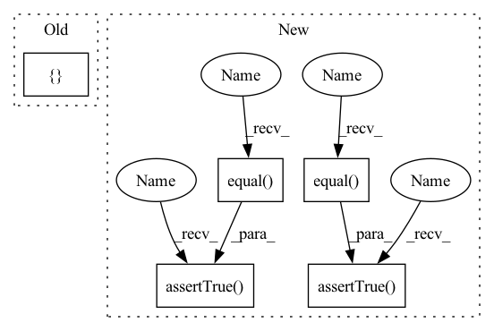

Pattern ID :40300

Before Change
def test_empty(self) -> None:
values = torch.Tensor()
keys = []
offsets = torch.Tensor()
KeyedJaggedTensor.from_offsets_sync(values=values, keys=keys, offsets=offsets)
After Change
def test_empty(self) -> None:
jt = JaggedTensor.empty()
self.assertTrue(torch.equal(jt.values(), torch.tensor([])))
self.assertTrue(torch.equal(jt.offsets(), torch.tensor([])))
def test_2d(self) -> None:
values = torch.Tensor([[i * 0.5, i * 1.0, i * 1.5] for i in range(1, 4)])
offsets = torch.IntTensor([0, 2, 2, 3])
In pattern: SUPERPATTERN
Frequency: 3
Non-data size: 5
Instances
Fragment ID: 114424801
Project Name: facebookresearch/torchrec
Commit Name: 148187a9e86d71bbd5b5f6dcd89f6c0cacdc2f7c
Time: 2022-03-01
Author: colin2328@fb.com
File Name: torchrec/sparse/tests/test_jagged_tensor.py
M Class Name: TestJaggedTensor
N Class Name: TestJaggedTensor
M Method Name: test_empty(1)
N Method Name: test_empty(1)
M Parent Class: unittest.TestCase
N Parent Class: unittest.TestCase
M File Name: torchrec/sparse/tests/test_jagged_tensor.py
N File Name: torchrec/sparse/tests/test_jagged_tensor.py
M Start Line: 137
M End Line: 140
N Start Line: 45
N End Line: 48
'>
Before Change
x=data, domain=domain, models=models, fn=inference.adda_fn
)
output2 = inference.adda_with_d(x=data, domain=domain, models=models)
for output in [output1, output2]:
d_logits = models["D"](models[gen_model](data))
self.assertTrue(torch.equal(d_logits, output["d_logits"]))
After Change
self.assertTrue(
torch.equal(other_features, output["other_features"])
)
self.assertTrue(torch.equal(other_logits, output["other_logits"]))
self.assertTrue(
torch.equal(other_d_logits, output["other_d_logits"])
)
def test_rtn_fn(self):
models, data, src_domain, target_domain = get_models_and_data()
models["residual_model"] = torch.nn.Linear(10, 10).to(TEST_DEVICE)
'>
Fragment ID: 114424800
Project Name: kevinmusgrave/pytorch-adapt
Commit Name: e70fc516c129d93b06b62ec67015a0dcddcf0b84
Time: 2022-02-24
Author: tkm45@cornell.edu
File Name: tests/inference/test_inference_fns.py
M Class Name: TestInferenceFns
N Class Name: TestInferenceFns
M Method Name: test_adda_fn(1)
N Method Name: test_adda_fn(1)
M Parent Class: unittest.TestCase
N Parent Class: unittest.TestCase
M File Name: tests/inference/test_inference_fns.py
N File Name: tests/inference/test_inference_fns.py
M Start Line: 124
M End Line: 129
N Start Line: 113
N End Line: 145
'>
Before Change
def test_empty(self) -> None:
values = torch.Tensor()
keys = []
offsets = torch.Tensor()
KeyedJaggedTensor.from_offsets_sync(values=values, keys=keys, offsets=offsets)
After Change
def test_empty(self) -> None:
jt = JaggedTensor.empty()
self.assertTrue(torch.equal(jt.values(), torch.tensor([])))
self.assertTrue(torch.equal(jt.offsets(), torch.tensor([])))
def test_2d(self) -> None:
values = torch.Tensor([[i * 0.5, i * 1.0, i * 1.5] for i in range(1, 4)])
offsets = torch.IntTensor([0, 2, 2, 3])
'>
Fragment ID: 114424802
Project Name: facebookresearch/torchrec
Commit Name: 148187a9e86d71bbd5b5f6dcd89f6c0cacdc2f7c
Time: 2022-03-01
Author: colin2328@fb.com
File Name: torchrec/sparse/tests/test_jagged_tensor.py
M Class Name: TestJaggedTensor
N Class Name: TestJaggedTensor
M Method Name: test_empty(1)
N Method Name: test_empty(1)
M Parent Class: unittest.TestCase
N Parent Class: unittest.TestCase
M File Name: torchrec/sparse/tests/test_jagged_tensor.py
N File Name: torchrec/sparse/tests/test_jagged_tensor.py
M Start Line: 137
M End Line: 140
N Start Line: 45
N End Line: 48